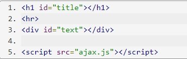
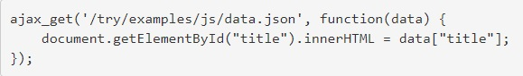

AJAX
AJAX stands for asynchronous JavaScript and XML
What is AJAX?
Ajax is a set of web development techniques using many web technologies on the client side to create asynchronous web applications. With Ajax, web applications can send and retrieve data from a server asynchronously without interfering with the display and behavior of the existing page.
How to you use AJAX to call JSON
One of the cornerstones of modern web application is the behind-the-scenes, asynchronous data communication between the server and the JavaScript code running in the browsers. While in Ajax, the X stands for XML, in reality many applications send data formatted as JSON. In most cases it is more convenient than sending XML.
In the example I used the JSON file that I created for last weeks assignment....
You would want to save this file like data.json
package json;
import java.io.File;
import java.io.FileNotFoundException;
import java.io.PrintWriter;
import java.util.Scanner;
import org.json.simple.JSONArray;
import org.json.simple.JSONObject;
import org.json.simple.parser.JSONParser;
import org.json.simple.parser.ParseException;
/**
*
* @author adam
*/
public class JSON {
public static void main(String[] args) {
Scanner input = new Scanner(System.in);
System.out.print("Please Enter Your Name: ");
String name = input.nextLine();
// Here you create the JSON object with a name-name value
JSONObject root = new JSONObject();
root.put("name", name);
// Here you declare array and then add to loop
JSONArray courses = new JSONArray();
while (true) {
// Ask user for courses they still need to take at BYU-I
System.out.print("Please Enter the Course/Courses you still need to take at BYU-I:\nIf no other course/s, leave it blank, and hit enter. ");
String course = input.nextLine();
// Break loop if user leaves course field blank and hits enter
if (course.length() == 0) {
break;
}
// Ask user for grade they hope to achieve
System.out.print("Enter Percent Grade You Hope to Achieve (example 83): ");
int grade = input.nextInt();
if (input.hasNextLine()) {
input.nextLine();
}
// Here you create and store JSON object
JSONObject courseObject = new JSONObject();
courseObject.put("grade", grade);
courseObject.put("name", course);
// Add course to array
courses.add(courseObject);
}
// Add the array to root object
root.put("courses", courses);
System.out.println(root.toJSONString());
// Trying to create a text file
File file = new File("StudentInfo.txt");
try (PrintWriter writer = new PrintWriter(file)){
writer.print(root.toJSONString());
} catch (FileNotFoundException ex) {
System.out.println(ex.toString());
}
System.out.println("The File was created successfully.\n\nPress enter to finish.");
input.nextLine();
try {
input = new Scanner(file);
StringBuilder jsonIn = new StringBuilder();
while (input.hasNextLine()) {
jsonIn.append(input.nextLine());
}
System.out.println(jsonIn.toString());
// Parse string
JSONParser parser = new JSONParser();
JSONObject objRoot = (JSONObject) parser.parse(jsonIn.toString());
System.out.printf("Students name is %s\n", objRoot.get("name").toString());
// Add parsed contents back into array
JSONArray coursesIn = (JSONArray) objRoot.get("courses");
// Loop back through the array to display contents
for (int i = 0; i < coursesIn.size(); i++) {
JSONObject courseIn = (JSONObject) coursesIn.get(i);
long gradeIn = (long) courseIn.get("grade");
String nameIn = (String) courseIn.get("name");
System.out.printf("Course %s; Percent grade %d\n", nameIn, gradeIn);
}
//Had to create a catch for the file not found exception.
} catch (FileNotFoundException | ParseException ex) {
System.out.println(ex.toString());
}
}
}
Your HTML
On your HTML page you would need to then call up an ajax file that you would create.
Your HTML would look something like this...
Your AJAX
You would then need to create a file like ajax.js
Your would use the function ajax_get to call on your JSON
You could do that like this...
Here is a basic example...